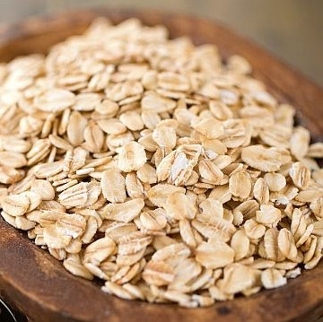

| Produto |
Descrição |
Preço |
Quantidade disponível |
 |
A semente de linhaça é rica ácidos graxos ômega 3 e 6. Como eles
ajudam no controle do colesterol e dos triglicérides, são bons
aliados no combate a doenças cardiovasculares. Além disso, a linhaça
é rica em fibras, proteínas, minerais e vitaminas C, E e do complexo
B.
|
R$20,00/kg |
30,00 kg |
 |
A banana nanica é rica em propriedades nutricionais, pois contém
muitos nutrientes e substâncias que muito benéficas à saúde. Por
exemplo, a banana nanica possui poucas calorias, ao mesmo tempo que
oferece boa quantidade de fibra alimentar e carboidratos que vão
alimentar e ainda ajudar no funcionamento do sistema digestivo.
|
R$05,00/dúzia |
40,00 dúzias |
|  |
Por ser uma fonte proteica, a aveia contém triptofano, um precursor
da serotonina, neurotransmissor responsável pelo controle do nosso
humor, conhecido como amigo do bem-estar). Além disso, é muito rica
em fibras de alta qualidade que auxiliam na redução do colesterol.
|
R$05,00/kg |
50,00 kg |
 |
O mirtilo é uma fruta muito rica em antioxidantes, vitamina, e
fibras, cujas propriedades ajudam a melhorar a saúde cardiovascular,
proteger o fígado e atrasar a deterioração da memória e da cognição.
|
R$25,00/kg |
40,50 kg |
 |
As principais propriedades da cúrcuma são a sua ação
anti-inflamatória, antioxidante, antibacteriana e digestiva e, por
isso, esta planta tem vários benefícios para o corpo.
|
R$09,00/kg |
10,00 kg |
|
O tofu é um tipo de queijo, feito a partir do leite de soja, que tem
muitos benefícios para a saúde como prevenir osteoporose, e por ser
uma fonte de proteínas também é ótimo para a saúde dos músculos,
prevenindo lesões de exercícios, e colaborando para o crescimento da
massa muscular.
|
R$11,00/kg |
20,00 kg |
|
Além de ser um caramelo natural, estudos laboratoriais concluíram
que o consumo de tâmara é bom para reduzir marcadores inflamatórios,
como a interleucina 6 (IL-6), no cérebro. Altos níveis de IL-6 estão
associados a um maior risco de doenças neurodegenerativas, como a
doença de Alzheimer.
|
R$05,00/kg |
07,00 kg |
 |
Rica em fibras e proteínas, com uma índice bem alto de proteínas
para o número de calorias, a lentilha oferece muitos benefícios a
saúde. Ela, inclusive, é a leguminosa mais rica em anti-oxidantes.
|
R$03,00/kg |
43,70 kg |
 |
Suas folhas são fontes de vitamina C, um antioxidante natural,
prevenindo o envelhecimento precoce e ajudando a fortalecer o
sistema imunológico. Fornecem ainda uma boa quantidade de vitamina
A, que favorece a visão; de vitamina K, que atua melhorando a
coagulação sanguínea e fortalecendo a saúde dos ossos; e também
fornecem bastante folato, ou ácido fólico.
|
R$05,00/maço |
20,00 maços |